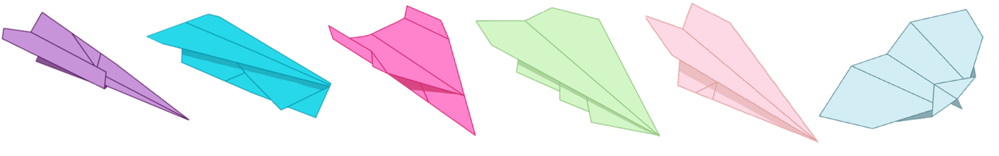
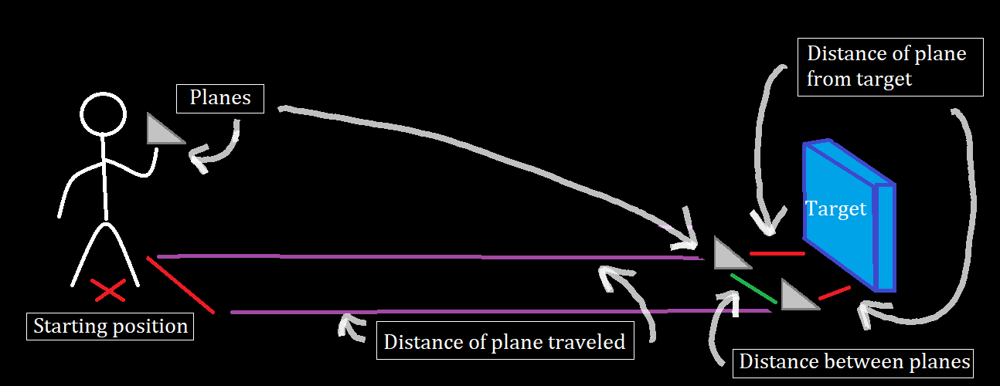

Section 2.1 Building and Flying Paper Airplanes
Subsection 2.1.1 Paper Airplane Instructions
Each of the videos below walks you through the steps in making a different type of paper airplane pictured below. The only thing that you will need for your airplanes is paper (copy, notebook, or construction paper will work). Although paper is the only material required, something to help crease down folds might also be useful, like a coin, ruler, or pen/pencil; also tape would help secure your planes’ wings.

Once you have all your supplies, watch the videos. Feel free to watch at the speed you are most comfortable with (faster or slower), pausing and replaying whenever you need. And, don’t forget to have fun!
Video Links.
- Pink Paper Airplane
1
www.youtube.com/watch?v=Tk_sLzzCZjE - The Dart/Gray Paper Airplane
2
www.youtube.com/watch?v=UoyNStKV06I - White Paper Airplane
3
www.youtube.com/watch?v=o9k6oI1gxi0 - The Bat/Light Blue Paper Airplane
4
www.youtube.com/watch?v=VIDtIa6PcDs - Green Paper Airplane
5
www.youtube.com/watch?v=l00pK1g0khQ - Light Pink Paper Airplane
6
www.youtube.com/watch?v=7eZ_JMrQxDY - Purple Airplane
7
www.youtube.com/watch?v=IprtFwX2RZk - Blue Paper Airplane
8
www.youtube.com/watch?v=4L8B-2y4Ax8

Note 2.1.4.
Disclaimer: The Girls Get Math program did not create the designs of the 8 paper airplanes that are provided. These designs existed before the program and were created by other individuals.Subsection 2.1.2 Paper Airplane Log Instructions
Mathematicians and scientists conduct experiments to test their hypotheses. These hypotheses are created to ask questions about the world around them. Using the Paper Airplane Log below, you will be conducting your own experiment to find the best paper airplane design out of the 8 provided.
Once you have successfully folded multiple airplanes of each design, you will fly them and record your findings. As with any experiment, there are tons of variables that can be measured, each of which will contribute to the design’s title as "best". And, like other experiments, multiple attempts must be done to ensure that your results are accurate. So, start by making 3 paper airplanes for each design. Once you have done this, read through the log to get a feel for what should be measured in every test.

The Paper Airplane Log asks that you measure the plane’s distance from a target as well as the distance from your plane flown in Round 1. In both of these cases, try to aim your airplane in the same spot each time. The closer your planes are to this spot (the target), the more accurate this design is. The closer your planes are from each other (i.e. small distances measured from where the plane from Round 1 landed), the more precise this design is.
Note 2.1.6.
If your idea of a perfect airplane is one that hits its target in the center every time, then precision and accuracy are the characteristics you are looking for.Paper Airplane Log Files.
Digital Versions:
- Google Sheet (Color)
9
docs.google.com/spreadsheets/d/1BhaCjX4dB1yDKZ1V4WLASHXSnc2F5UF1L74W5xhNEnI/edit#gid=0 - Google Sheet (Black and White)
10
docs.google.com/spreadsheets/d/1JuKvZVpLSJSvXEb5zLLyh2N2ULJL32Me/edit#gid=1004001917
Printable Versions:
- PDF (Color)
11
drive.google.com/file/d/1vq_Qx1ve8KXtmueb8pz4x0WD7V-_cM3i/view - PDF (Black and White)
12
drive.google.com/file/d/1aoIUoW203wOa7hfO895fPR1W_YnqnqYW/view
Start Flying your Airplanes.
Pull up your phone’s stopwatch; get a friend to count out loud; have a parent/guardian measure the distance with a ruler or yardstick; put up trashcans and blankets as targets. Get creative! Whatever, and however, you chose to measure when flying your paper airplanes is up to you. Remember that the objective of your experiment is to find the best paper airplane design, so figure out what you think makes a paper airplane the best (fastest, furthest flying, most accurate/precise) and test for that.